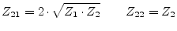
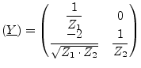
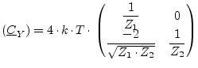
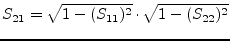
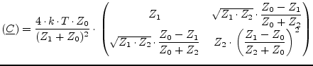

An isolator is a one-way two-port, transporting incoming waves
lossless from the input (port 1) to the output (port 2), but dissipating
all waves flowing into the output.
The ideal isolator with reference impedances  (input) and
(input) and  (output) is determined by the following Z parameters (for DC and
AC simulation).
(output) is determined by the following Z parameters (for DC and
AC simulation).
| (9.88) |
|  | (9.89) |
A more useful MNA representation is with Y parameters.
|  | (9.90) |
Isolator with reference impedance  (input) and
(input) and  (output) and
temperature
(output) and
temperature  :
:
|  | (9.91) |
With the reference impedance of the
input  and the one of the output
and the one of the output  , the scattering parameters
of an ideal isolator writes as follows.
, the scattering parameters
of an ideal isolator writes as follows.
 |
(9.92) |
| (9.93) |
 |
(9.94) |
|  | (9.95) |
Being on temperature  , the noise wave correlation matrix of an
ideal isolator with reference impedance
, the noise wave correlation matrix of an
ideal isolator with reference impedance  and
and  (input and
output) writes as follows.
(input and
output) writes as follows.
|  | (9.96) |